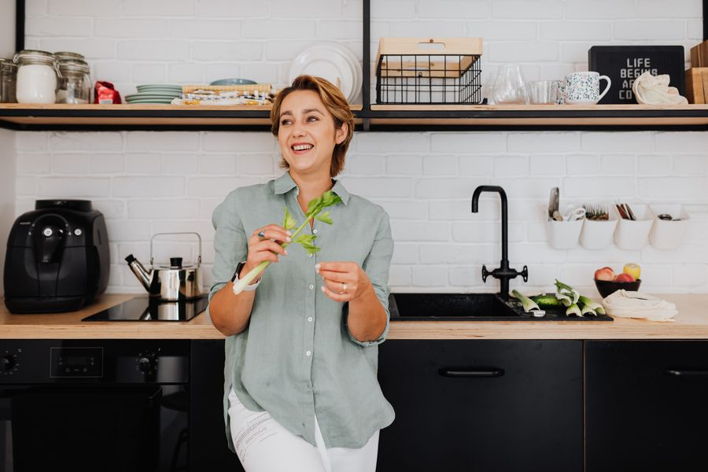
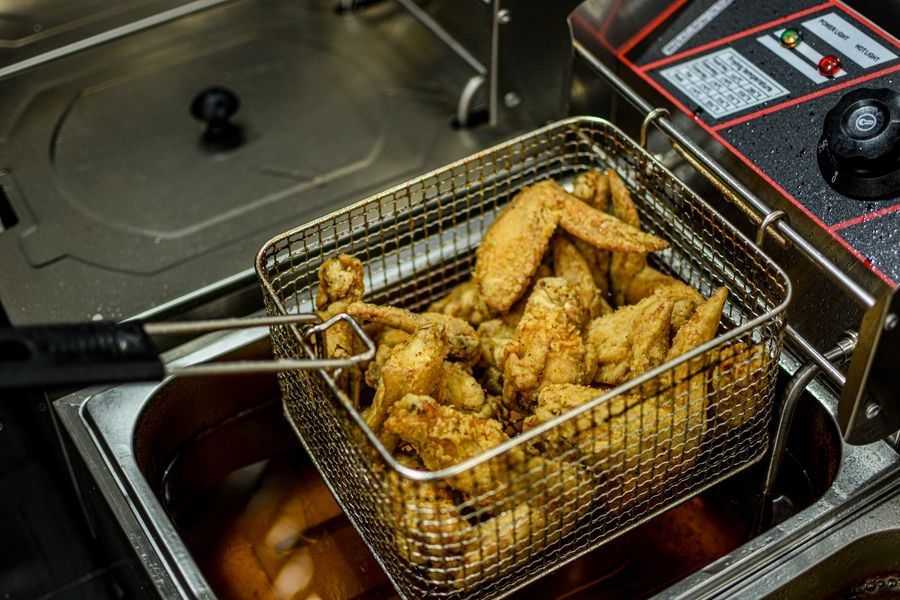
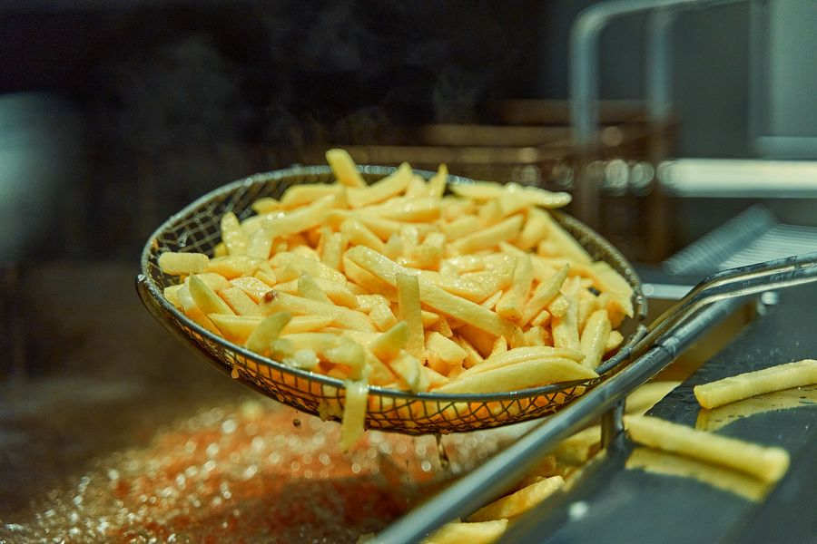

Los mejores en calidad-precio
El mejor 
Imagen orientativa La mejor, sin mirar el precio
Ninja Foodi doble cesto A favor Dos cestos independientes a temperaturas distintas Se acabó cocinar en dos tandas Acabados y mandos por encima de la media En contra Ocupa bastante encimera Cara Si sois cuatro, esto resuelve el motivo nº1 de abandono: las dos tandas.
Ver precio actual en Amazon
¿Te lo estás pensando? Añádelo al carrito en Amazon y decídelo con calma: te avisan si baja de precio y lo tienes a mano cuando te decidas.
No ponemos precios porque cambian cada día. Lo ves actualizado al entrar.
Gama media 
Imagen orientativa Gama media · la de referencia
Cosori 5,5 L A favor El tamaño más sensato para dos o tres personas Cesto y rejilla al lavavajillas Muy silenciosa para su clase En contra La capacidad útil es la mitad de la anunciada Si solo compras una, esta medida.
Ver precio actual en Amazon
¿Te lo estás pensando? Añádelo al carrito en Amazon y decídelo con calma: te avisan si baja de precio y lo tienes a mano cuando te decidas.
No ponemos precios porque cambian cada día. Lo ves actualizado al entrar.
Gama media 
Imagen orientativa Gama media · la más fiable
Philips Airfryer serie 3000 A favor La marca que inventó la categoría Reparto de calor muy uniforme Repuestos fáciles de encontrar En contra Menos capacidad por euro que la competencia Cuando prefieres pagar por que dure y no dar problemas.
Ver precio actual en Amazon
¿Te lo estás pensando? Añádelo al carrito en Amazon y decídelo con calma: te avisan si baja de precio y lo tienes a mano cuando te decidas.
No ponemos precios porque cambian cada día. Lo ves actualizado al entrar.
El mejor barato Imagen orientativa La mejor de las baratas
Cecotec Cecofry A favor Precio difícil de igualar Servicio técnico en España En contra Mandos táctiles menos duraderos Más ruidosa Para probar la categoría sin gastarse mucho.
Ver precio actual en Amazon
¿Te lo estás pensando? Añádelo al carrito en Amazon y decídelo con calma: te avisan si baja de precio y lo tienes a mano cuando te decidas.
No ponemos precios porque cambian cada día. Lo ves actualizado al entrar.